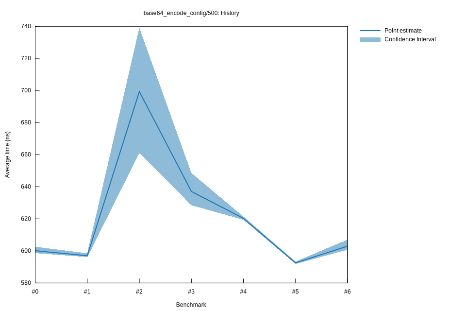

# 62022-10-16T19:52:38+03:00
|
Lower Bound |
Estimate |
Upper Bound |
| Value: |
600.78ns |
602.97ns |
607.02ns |
| Throughput: |
795.28MiB/s |
792.40MiB/s |
787.11MiB/s |
| Change in Value: |
+0.3469% |
+1.2763% |
+2.0748% |
| Change in Throughput: |
-0.3457% |
-1.2602% |
-2.0327% |
No change in performance detected.
# 52022-10-16T17:14:35+03:00
|
Lower Bound |
Estimate |
Upper Bound |
| Value: |
591.86ns |
592.56ns |
593.37ns |
| Throughput: |
807.27MiB/s |
806.31MiB/s |
805.21MiB/s |
| Change in Value: |
-6.0187% |
-4.6816% |
-3.5362% |
| Change in Throughput: |
+6.4041% |
+4.9115% |
+3.6659% |
No change in performance detected.
# 42022-10-15T17:09:19+03:00
|
Lower Bound |
Estimate |
Upper Bound |
| Value: |
619.38ns |
620.28ns |
621.39ns |
| Throughput: |
771.41MiB/s |
770.28MiB/s |
768.91MiB/s |
| Change in Value: |
-4.3513% |
-2.5154% |
-0.7343% |
| Change in Throughput: |
+4.5493% |
+2.5803% |
+0.7397% |
No change in performance detected.
# 32022-10-15T17:05:46+03:00
|
Lower Bound |
Estimate |
Upper Bound |
| Value: |
628.47ns |
637.03ns |
648.54ns |
| Throughput: |
760.24MiB/s |
750.03MiB/s |
736.72MiB/s |
| Change in Value: |
-6.7955% |
-3.7641% |
-0.8203% |
| Change in Throughput: |
+7.2909% |
+3.9113% |
+0.8271% |
No change in performance detected.
# 22022-10-15T16:44:58+03:00
|
Lower Bound |
Estimate |
Upper Bound |
| Value: |
661.02ns |
699.29ns |
739.05ns |
| Throughput: |
722.81MiB/s |
683.25MiB/s |
646.49MiB/s |
| Change in Value: |
+8.6384% |
+11.353% |
+14.555% |
| Change in Throughput: |
-7.9515% |
-10.196% |
-12.706% |
No change in performance detected.
# 12022-10-08T17:23:03+03:00
|
Lower Bound |
Estimate |
Upper Bound |
| Value: |
596.19ns |
597.00ns |
598.54ns |
| Throughput: |
801.41MiB/s |
800.32MiB/s |
798.26MiB/s |
| Change in Value: |
-0.4354% |
-0.1368% |
+0.1969% |
| Change in Throughput: |
+0.4373% |
+0.1370% |
-0.1965% |
Change within noise threshold.
# 02022-10-08T17:04:15+03:00
|
Lower Bound |
Estimate |
Upper Bound |
| Value: |
598.62ns |
600.11ns |
602.58ns |
| Throughput: |
798.16MiB/s |
796.17MiB/s |
792.91MiB/s |